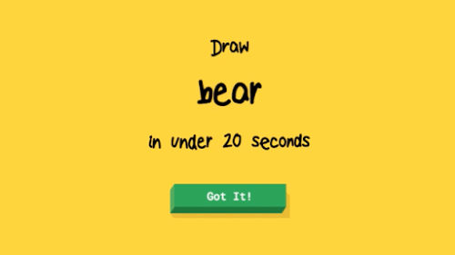
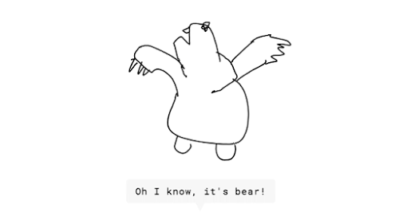
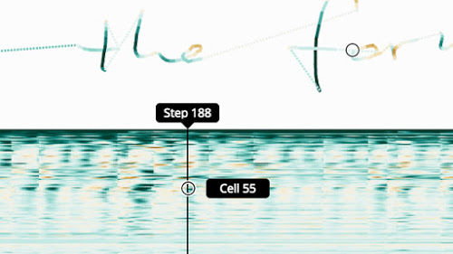

Lab 1 - AI Systems Demonstrations
Tesla Self-Driving Demonstration
Video preview
Ref: Tesla demo link
Google AI Experiments
Quick, Draw!
 
This is a game built with machine learning. You draw, and a neural network tries to guess what you’re drawing. Of course, it doesn’t always work. But the more you play with it, the more it will learn. It’s just one example of how you can use machine learning in fun ways.
Handwriting with a Neural Net

There's a lot of interest in trying to understand and visualize neural networks. This experiment lets you play with a neural network that can generate strokes based on your handwriting style. Through interactive visualizations, you can see and explore how the neural net works.
Ref: AI experiments link
WeChat app: 你画我猜！
Playing Mario with A*
Video preview
Ref: YouTube Video by Robin Baumgarten
Playing Mario with Deep Reinforcement Learning
Video preview
Ref: GitHub link
Designing Mario Levels using Generative Adversarial Network
Video preview
Ref:
- Evolving Mario Levels in the Latent Space of a Deep Convolutional Generative Adversarial Network. [pdf]
- GitHub link
AlphaGo
Learn to Play the Game Go with AlphaGo
The numbers indicate the extimated win rate. The video is recorded by Jialin Liu using https://alphagoteach.deepmind.com/
Paper: Master the game of Go with deep neural networks and tree search. [pdf]
[ICML 2017 Test of Time Award] Combining Online and Offline Knowledge in UCT
(Sylvain Gelly & David Silver, Google Brain & Google DeepMind)
Video preview